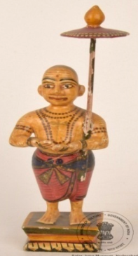

🔇 Is bhasha me is vastu ka audio abhi uplabdh nahi hai.
6. MS - 4822: एक संत की मूर्ति

6. MS - 4822
यह एक पेंट की हुई खिलौना जैसी मूर्ति है, जिसमें एक पुरुष - वामन, विष्णु के अवतार को दर्शाया गया है। वामन के कंधे पर बायें तरफ छाता रखा हुआ है, उन्होंने लाल धोती पहन रखी है और गर्दन पर माला (जपमाला) डाली हुई है। चेहरा, शरीर और पैरों को पीले रंग से पेंट किया गया है। संस्कृत में “वामन” का अर्थ है छोटे कद वाला या बौना, जो उनके छोटे और विनम्र ब्राह्मण बालक के रूप को दर्शाता है। वामन विष्णु के दस प्रमुख अवतारों (दशावतार) में पाँचवें अवतार माने जाते हैं। वामन को त्रिविक्रम भी कहा जाता है, जिसका अर्थ है “तीन पैरों वाला भगवान।” वामन अवतार कहा जाता है कि संसार में संतुलन और विनम्रता बहाल करने के लिए आया। यह मूर्ति भारत की है और इसका निर्माण 20वीं सदी में हुआ था।
6. MS - 4822: Figure of a Saint
6. MS - 4822
This is a painted toy-like figure depicting Vamana, an avatar of Vishnu. An umbrella rests on Vamana's left shoulder; he wears a red dhoti and a rosary (japamala) around his neck. The face, body and legs are painted yellow. In Sanskrit “Vamana” means one of short stature, or dwarf, reflecting his small and humble form as a brahmin boy. Vamana is considered the fifth of the ten principal avatars of Vishnu (the Dashavatara). Vamana is also called Trivikrama, meaning “the god of three strides”. The Vamana avatar is said to have come to restore balance and humility to the world. This figure is from India and was made in the 20th century.
6. MS - 4822: సాధువు బొమ్మ
6. MS - 4822
ఈ బొమ్మ 20వ శతాబ్దానికి చెందిన భారతీయ కళాఖండం. ఇది విష్ణువు యొక్క ఐదవ అవతారమైన వామనుడి యొక్క రంగులు వేసిన ఆట బొమ్మ. ఎరుపు ధోతీ ధరించి, మెడపై రుద్రాక్షలు ఉన్న ఈ బొమ్మ, తన ఎడమ భుజంపై ఒక గొడుగును (umbrella) పట్టుకుని ఉంది. అతని ముఖం, శరీరం మరియు కాళ్ళకు పసుపు రంగు వేయబడింది. సంస్కృతంలో "వామన" అంటే చిన్న రూపం లేదా మరుగుజ్జు అని అర్థం. విష్ణువు యొక్క దశావతారాలలో ఒకటైన వామనుడిని త్రివిక్రముడు (మూడు అడుగుల దేవుడు) అని కూడా అంటారు. ఈ వామనావతారం ప్రపంచంలో సమతుల్యత మరియు వినయాన్ని పునరుద్ధరించడానికి ఉద్భవించిందని చెబుతారు.
5. MS - 4764: ஒரு மனிதனின் உருவம் (FIGURE OF A MAN)
5. MS - 4764
“வண்ணம்பூசப்பட்டபொம்மைவடிவில்ஒருமனிதஉருவச்சிலை. இதுவிஷ்ணுவின்அவதாரங்களில்ஒன்றானவாமனனைசித்தரிக்கிறது. அவர்இடதுதோளின்மீதுஒருகுடையைவைத்துக்கொண்டும், சிவப்புநிறவேஷ்டிஅணிந்தும், கழுத்தில்ஜபமாலைஅணிந்தும்காணப்படுகிறார். முகம், உடல்மற்றும்கால்கள்மஞ்சள்நிறத்தில்வர்ணம்பூசப்பட்டுள்ளன.‘வாமனன்’ என்றசமஸ்கிருதச்சொல்சிறியஉருவம்அல்லதுகுட்டையானஉடல்அமைப்பைக்குறிக்கிறது; இதுஒருசிறிய, தாழ்மையானபிராமணசிறுவனாகஅவர்தோன்றியதைபிரதிபலிக்கிறது. வாமனன்என்பதுவிஷ்ணுவின்பத்துமுக்கியஅவதாரங்களாகக்கருதப்படும் ‘தசாவதாரம்’ வரிசையில்ஐந்தாவதுஅவதாரமாகும். வாமனன் ‘திரிவிக்ரமன்’ என்றும்அழைக்கப்படுகிறார்; அதாவது ‘மூன்றுஅடிகள்எடுத்துஉலகத்தைஅளந்தவன்’ என்றபொருளைக்குறிக்கிறது.வாமனஅவதாரம்உலகில்சமநிலையையும்தாழ்மையையும்மீண்டும்நிலைநிறுத்துவதற்காகஏற்பட்டதாகக்கூறப்படுகிறது. இந்தஉருவச்சிலைஇந்தியாவைச்சேர்ந்தது; இது 20ஆம்நூற்றாண்டைச்சேர்ந்ததாகக்கருதப்படுகிறது.”
6. MS - 4822: एका संताची मूर्ती
6. MS - 4822
ही रंगवलेली खेळण्यासारखी मूर्ती असून त्यात विष्णूचा अवतार वामन दाखवला आहे. वामनाच्या डाव्या खांद्यावर छत्री ठेवलेली आहे, त्यांनी लाल धोतर नेसले असून गळ्यात जपमाळ घातली आहे. चेहरा, शरीर आणि पाय पिवळ्या रंगाने रंगवले आहेत. संस्कृतमध्ये “वामन” म्हणजे लहान उंचीचा किंवा बटू, जे त्यांच्या लहान व नम्र ब्राह्मण बालकाच्या रूपाचे द्योतक आहे. वामन हे विष्णूच्या दहा प्रमुख अवतारांपैकी (दशावतार) पाचवे अवतार मानले जातात. वामनाला त्रिविक्रम असेही म्हणतात, ज्याचा अर्थ “तीन पावलांचा देव”. वामन अवतार जगात संतुलन आणि नम्रता पुन्हा प्रस्थापित करण्यासाठी आला असे सांगितले जाते. ही मूर्ती भारताची असून तिची निर्मिती २०व्या शतकात झाली होती.
6. എം. എസ്-4822: ഒരു വിശുദ്ധന്റെ പ്രതിമ
6. എം. എസ്-4822
6. എം. എസ്-4822: ഒരു വിശുദ്ധന്റെ പ്രതിമ
6. MS-4822: ಫಿಗರ್ ಆಫ್ ಸೇಂಟ್
6. MS-4822
ವಿಷ್ಣುವಿನ ಅವತಾರವಾದ ವಾಮನನ ಬಣ್ಣ ಬಳಿದ ಆಟಿಕೆಯ ಶಿಲ್ಪ ಕಲಾಕೃತಿಯು ತನ್ನ ಎಡ ಹೆಗಲ ಮೇಲೆ ಕೊಡೆಯನ್ನು ಹಿಡಿದುಕೊಂಡಿದೆ. ಇದು ಕೆಂಪು ಧೋತಿ ಮತ್ತು ಕುತ್ತಿಗೆಯಲ್ಲಿ ಜಪಮಾಲೆಗಳನ್ನು ಧರಿಸಿದ್ದು, ಇದರ ಮುಖ, ದೇಹ ಹಾಗೂ ಕಾಲುಗಳಿಗೆ ಹಳದಿ ಬಣ್ಣವನ್ನು ಬಳಿಯಲಾಗಿದೆ.ಸಂಸ್ಕೃತದಲ್ಲಿ "ವಾಮನ" ಎಂದರೆ ಸಣ್ಣ ಕಾಯದವನು ಅಥವಾ ಕುಳ್ಳ ಎಂದರ್ಥ. ಇದು ಸಣ್ಣ ಹಾಗೂ ವಿನಮ್ರ ಬ್ರಾಹ್ಮಣ ಹುಡುಗನ ರೂಪದಲ್ಲಿರುವ ಆತನ ದೈಹಿಕ ನೋಟವನ್ನು ಪ್ರತಿಬಿಂಬಿಸುತ್ತದೆ. ದಶಾವತಾರ ಎಂದು ಕರೆಯಲ್ಪಡುವ ವಿಷ್ಣುವಿನ ಹತ್ತು ಪ್ರಮುಖ ಅವತಾರಗಳಲ್ಲಿ ವಾಮನಅವತಾರವು ಐದನೇ ಅವತಾರವಾಗಿದೆ. ವಾಮನನನ್ನು 'ತ್ರಿವಿಕ್ರಮ' ಎಂದೂ ಕರೆಯುತ್ತಾರೆ, ಅಂದರೆ "ಮೂರು ಹೆಜ್ಜೆಗಳ ದೇವರು" ಎಂದರ್ಥ.ಪ್ರಪಂಚದಲ್ಲಿ ಸಮತೋಲನ ಮತ್ತು ವಿನಯಶೀಲತೆಯನ್ನು ಮರುಸ್ಥಾಪಿಸುವ ಉದ್ದೇಶದಿಂದ ವಾಮನ ಅವತಾರವನ್ನು ಪಡೆಯಬೇಕಾಯಿತ್ತುಎಂದು ಹೇಳಲಾಗುತ್ತದೆ. ಈ ಕಲಾಕೃತಿಯು ಭಾರತದಲ್ಲಿಯೇ ರೂಪುಗೊಂಡಿದ್ದು, 20ನೇ ಶತಮಾನದಷ್ಟು ಹಳೆಯದಾಗಿದೆ.
6. MS - 4822: ଜଣେ ସନ୍ଥଙ୍କ ମୂର୍ତ୍ତି
6. MS - 4822
ଭଗବାନବିଷ୍ଣୁଙ୍କ ବାମନ ଅବତାରକୁ ଏଠାରେ ମୂର୍ତ୍ତି ଆକାର ଦିଆଯାଇଛି ,ଏଠାରେ ଆମେ ଦେଖିବା ମୂର୍ତ୍ତିର ବାମ କାନ୍ଧରେ ଛତା ଥିବା ବେଳେ, ଲାଲ ଧୋତି ପରିହିତ ଅଛନ୍ତି ଏବଂ ତାଙ୍କ ବେକରେ ଜପାମାଳା ଅଛି, ତାଙ୍କ ମୁଖ, ଶରୀର ଏବଂ ପାଦକୁ ହଳଦିଆ ରଙ୍ଗରେ ରଙ୍ଗିତ କରାଯାଇଛି। ସଂସ୍କୃତରେ "ବାମନ"ର ଅର୍ଥ ଆକୃତିରେ ଯିଏ ସୂକ୍ଷ୍ମ କିମ୍ବା ବାମନ, ଏଠାରେ ଜଣେ ବ୍ରାହ୍ମଣ ବାଳକ ଭାବରେ ଭଗବାନଙ୍କସୂକ୍ଷ୍ମ, ନମ୍ର ରୂପକୁ ପ୍ରତିଫଳିତ କରାଯାଇଛି। ବାମନ ଅବତାର ହେଉଛି ଭଗବାନ ବିଷ୍ଣୁଙ୍କ ଦଶଟି ପ୍ରମୁଖ ଅବତାର ମଧ୍ୟରୁ ପଞ୍ଚମ ଅବତାର, ଏହିଦଶଟି ଅବତାରକୁ ଦଶାବତାର କୁହାଯାଇଥାଏ। ବାମନ ଅବତାରକୁ ତ୍ରିବିକ୍ରମ ମଧ୍ୟ କୁହାଯାଏ, ଯାହାର ଅର୍ଥ "ତିନି ପାଦର ଦେବତା"। ବାମନ ଅବତାରର ମୁଖ୍ୟ ଉଦ୍ଦେଶ୍ୟ ଥିଲା ସଂସାରରେ ସମତା ରକ୍ଷା କରିବାସହ ନମ୍ରତା ଭାବକୁ ପୁନର୍ସ୍ଥାପନ କରିବା। ଏହା ଭାରତରୁ ଉତ୍ପତ୍ତି ହୋଇଥିଲା ଏବଂ ଏହାର ଇତିହାସ 20ଶ ଶତାବ୍ଦୀର ଅଟେ।
6. MS - 4822: একজন সাধুর মূর্তি
6. MS - 4822
একজন পুরুষের চিত্রিত খেলনা মূর্তি—যিনি বিষ্ণুর অবতার বামন; তাঁর বাম কাঁধের ওপর একটি ছাতা রয়েছে এবং পরনে লাল ধুতি ও গলায় রুদ্রাক্ষের মালা। তাঁর মুখমণ্ডল, শরীর এবং পা হলুদ রঙে রঞ্জিত। সংস্কৃত ভাষায় "বামন" শব্দের অর্থ হলো ক্ষুদ্র বা খর্বকায়, যা একজন ছোট ও বিনয়ী ব্রাহ্মণ বালক রূপে তাঁর শারীরিক অবয়বকে প্রতিফলিত করে। বিষ্ণুর দশজন প্রধান অবতার, যাঁরা'দশাবতার' নামে পরিচিত, বামন তাঁদের মধ্যে পঞ্চম অবতার। বামন 'ত্রিবিক্রম' নামেও পরিচিত, যার অর্থ হলো "তিন পদধারী ঈশ্বর"। বলা হয় যে, পৃথিবীতে ভারসাম্য এবং বিনয় ফিরিয়ে আনার জন্য বামন অবতারের আবির্ভাব ঘটেছিল। এর উৎপত্তি ভারতবর্ষে এবং এটি ২০ শতকের একটি নিদর্শন।
6. ایمایس-4822: ایکسنتکا مجسمہ
6. ایمایس-4822
ایک آدمی کا پینٹ کیا ہوا کھلونا مجسمہ — وامَن، وشنو کے اوتار، کندھے پر چھتری اٹھائے ہوئے، سرخ دھوتی پہنے اور گردن پر جپملیاں لٹکائے ہوئے۔ چہرہ، جسم اور ٹانگیں پیلے رنگ سے پینٹ کی گئی ہیں۔ سنسکرت میں “وامَن” کا مطلب ہے چھوٹے قد والا یا بونے کے مترادف، جو اس کی جسمانی شکل یعنی ایک چھوٹے، عاجز برہمن لڑکے کی عکاسی کرتا ہے۔ وامَن وشنو کے دس بڑے اوتاروں (دشاوتار) میں پانچواں اوتار ہیں۔ وامَن کو ترووکرم بھی کہا جاتا ہے، جس کا مطلب ہے “تین قدموں والا خدا”۔ کہا جاتا ہے کہ وامَن اوتار دنیا میں توازن اور عاجزی بحال کرنے کے لیے آیا۔ یہ اوتار بھارت سے تعلق رکھتا ہے اور یہ 20ویں صدی کا ہے۔
6. MS -4822: સંતની આકૃતિ
6. MS -4822
રમકડાની આકૃતિથી રંગાયેલા પુરુષ - વામન, જે વિષ્ણુનો અવતાર છે, ડાબા ખભે પર છત્ર ધારણ કર્યું છે અને લાલ ધોતી પહેરી છે અને ગળા, ચહેરો, શરીર અને પગ પર માળા પહેરી છે જે પીળા રંગે રંગાયેલી છે. સંસ્કૃતમાં "વામન" નો અર્થ કદમાં નાનો અથવા ઠીંગણું- વામણું થાય છે, જે તેના નાના, નમ્ર બ્રાહ્મણ છોકરા તરીકેના શારીરિક દેખાવને પ્રતિબિંબિત કરે છે. વામન એ વિષ્ણુના દસ મુખ્ય અવતારોમાં પાંચમો અવતાર છે, જેને હકીકતમાં દશાવતાર તરીકે ઓળખવામાં આવે છે. વામનને ત્રિવિક્રમ તરીકે પણ ઓળખવામાં આવે છે, જેનો અર્થ "ત્રણ પગલાંનો દેવ" થાય છે. કહેવાય છે કે વામન અવતારનો ઉદ્દેશ્ય વિશ્વમાં સંતુલન અને નમ્રતા પુનઃસ્થાપિત કરવાનો હતો. તેની ઉત્પત્તિ ભારતમાં થઇ છે અને આ 20મી સદીનું છે.